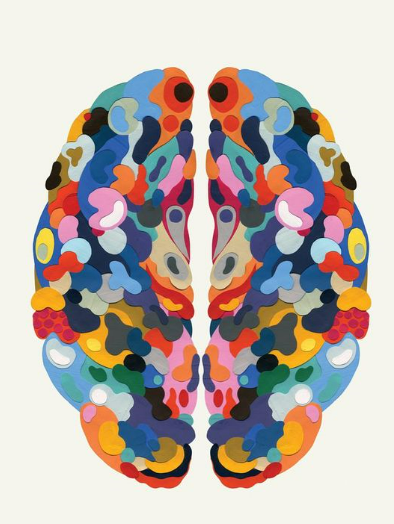

Growth Mindset
Neuroplasticity
What is it and why understand it?
Neuroplasticity is the brain's ability to change and adapt both the structure and function of our brains. To do this is through experience as in the more times we react in a certain way to something, the more likely we are to respond in that same way in our future.
This means we have the opportunity to choose that change and that we are in control of our brain's responses and functions. When we understand how capable our brain's are capable of change, it gives a new perspective on our current reactions as it makes us aware of the potential change. Our initial perceptions may be that abilities are 'fixed' abilities, when in reality they can be improved with hard work and effort. It makes us realise that it's possible to train your brain to react in a certain way to a situation, which may cause us to further explore the most beneficial training for our brain and apply it to ourselves.
How to increase your neuroplasticity?
- Engaging in a learning environment which requires focused attention, novelty and challenge
- learning an instrument
- learning a language
- reading
- creating art
- getting plenty of rest
- regular exercise
Growth vs Fixed Mindsets
Two different people could have opposite perspectives on the same problem all because of their difference in mindsets. One person may have a fixed mindset which means they believe that you are born with your skills and abilities and your effort won't change that, whereas the growth mindset person will see a challenge as an opportunity to learn new skills.
People who have a growth mindset believe their talents can be developed (through hard work, good strategies, and input from others). This is relevant because it's the mindset we need to be able to improve unnatural skills or abilities which may need more effort and perseverance.
Learning plan and strategies
I will try to observe what my current thinking patterns tend to be and notice which areas may need a better thinking approach. From there I would probably decide which area to focus on and notice what changes could be made. I think I'll also try to embrace challenges and try to see them as an opportunity to learn perservernce, in constrast to an impossible problem which is too difficult to work through.
A specific area I plan to work on and make a stronger approach to is growing my organisational skills, with this new knowledge. It's never been my nature to be very organized and I plan to work on ways to improve it, and to try using the growth mindset while coming up with solutions.
Helpful Resources:
Growth Mindset
 Eva's Blog
Eva's Blog